| 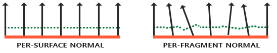 |

|
Minecraft was designed to be a lightweight game and was designed to have very simple textures and lighting.
For example, the game does not take advantage of the normal map of each block texture, resulting in a flat texture
for blocks like cobblestone or furnaces. Also, the game treats sunlight as an ambient light, and blocks facing away from the sun
will have the same brightness as the blocks facing the sun. Our team wanted to enhance lighting and textures in minecraft so scenes look realistic.
We were able to bring in normal shading, where blocks facing away from the sun will look darker than blocks facing the sun.
We added shadows, and added realism through the shadows by accounting for shadow distortion and transparent blocks.
We have used the normal maps of block textures and parallelex mapping to add depth of field to the textures of blocks.
Finally, we used specular highlights to make the reflection of sunlight in certain blocks more shiny and realistic.
Normal shading uses the normal vector of the surface of a block and the suns direction to calculate the contribution of the sunlight in each block. if the surface normal is facing the sun, the sunlight contribution of the block will be close to one. If a block is facing away from the sun (at 90 degrees), the sunlight contribution will be zero.
| 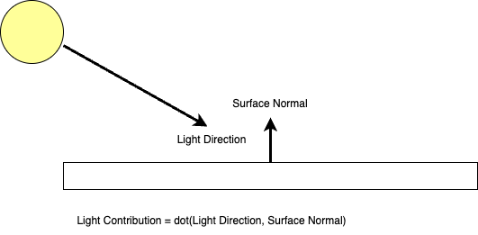 |
We added a small bit of ambient light to make sure that blocks which face away from the sun don't look completely dark.
| 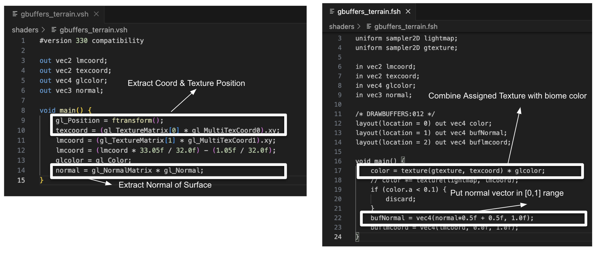 |
Simply put, we were able to extract the world coordinate, texture coordinate, and the normal of the surface from the vertex shader. In the fragment shader, we can extract the texture of the biome and put the normal vector in the 0~1 range.
| 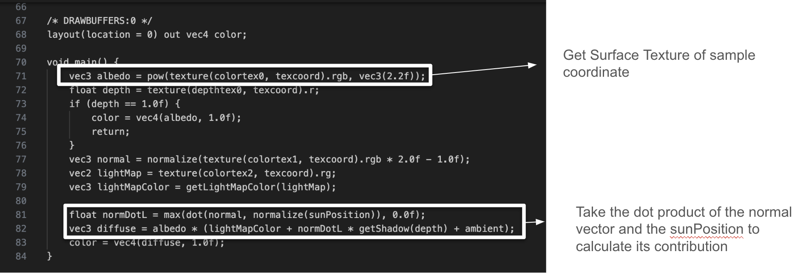 |
We finally obtain the texture of the sample coordinate and we factor in the sun's contribution (normdotL), into the overall light calculation.
| 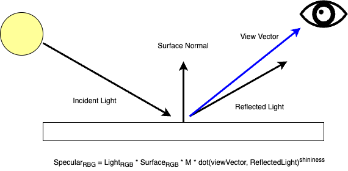 |
The goal of Specular Highlights is that objects will look brighter from certain angles and this brightness will diminish as you move away. We achieve this through taking the dot product between the view vector (ray pointing to the eye from the sample) and the light reflected off of the sample point. We can make this effect more pronounced by having a large shininess factor. The value of the dot product multiplying will increase exponentially. We also take into account how matte each objects are. We won't expect wood to absorb light like what glass would.
[Todo]
To generate shadows, we first take the clip space coordinates that include the depth texture taken from the eyes point of view, and convert it to clip space -> view space -> worldspace -> shadowspace.
| 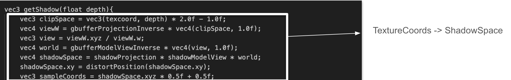 |
We use lots of optifine primitives to go from texture to shadowspace. Depth texture from the eye's point of view is given by optifine as depth. We then multiply it by the inverse projection matrix and divide by vieW.w to get to viewspace. To get to worldspace we multiply by the gbufferModelViewInverse. Using the shadowView and shadowProjection matrix, we can transfer worldspace coordinates to shadow space. We make sure the samplecoords for the shadow stays in the (0, 1) range.
| 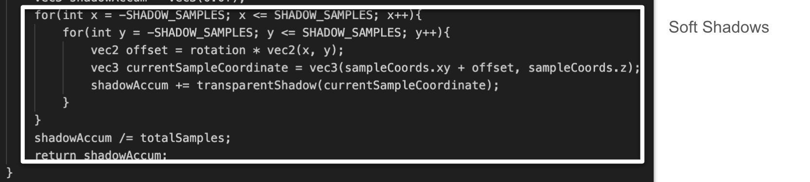 |
Shadows used in minecraft often don't account for falloff at the edges. They mostly look black and white. Ideally, we want the shadow to be realistic (not black and white). We would ideally like the shadow's color to blend in with the background along the edges. To achieve this, we use a tactic similar to supersampling. When we sample shadow texture, we sample in a small box (shadow samples x shadow samples) wide. We then average the colors, giving us a smooth shadow transition.
| 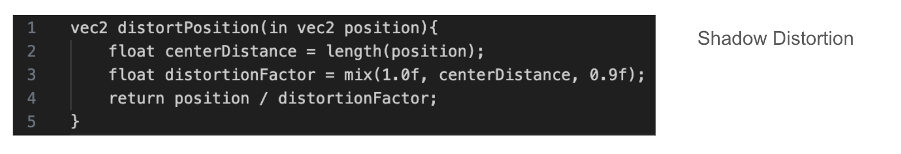 |
Another factor we take into account is the distance of the shadow in relation to the player. We calculate the centerDistance, which is the distance of the shadow coordinate to the player and distort the position in a way that the shadows get smaller as they get further away from the player.
| 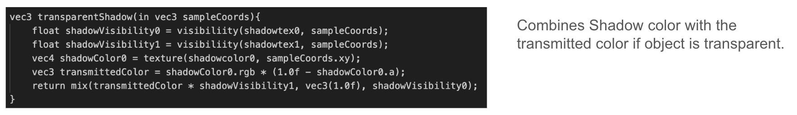 |
The final consideration for shadows is transparent objects. We want the shadow to be textured differently (combine some colors from the environment) if the blocks causing the shadow are transparent. Optifine gives us shadowtex1, which only includes shadow textures for non-transparent blocks. We can also sample the block color with the texture of the shadow color. We can take a mix of the transmitted color and the original shadow color. Realize that shadowVisibility1 will be zero if the object is not transparent.
| 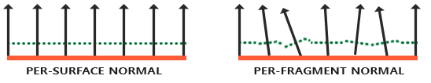 |
|
Parallax Mapping is similar to Normal Mapping, but based on different principles. It gives us a sense of depth, and if combined with Normal Mapping, it will create incredibly realistic results. The idea behind Parallax Mapping is to alter the texture coordinates in such a way that it looks like a fragment's surface is higher or lower than it actually is, all based on the view direction and a heightmap.

|

|

|
Overall, we were able to learn how to apply and extend concepts we learned in class (Blinn Phong reflection, lighting, and glsl) and apply it to a real world video game. We spent a considerable amount of time learning OpenGL's API, getting familiar with the GLSL programming language, and referencing Optifine's official documentation to implement the features we had in mind. We had to deal with complicated translation between all kinds of coordinate systems in Minecraft(object space, world space, view space,tangent space etc.) We also learned to critically think about shading problems and create solutions on how to make the scene look good. One example of this would be accounting for the shadow edge falloff, so that the shadows don't look blocky. We took a good look at the materials learned in class and learned to use other frameworks to apply our knowledge into real world problems.
| 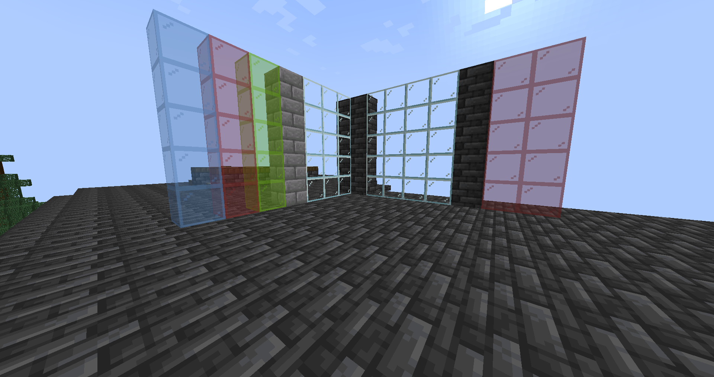 | 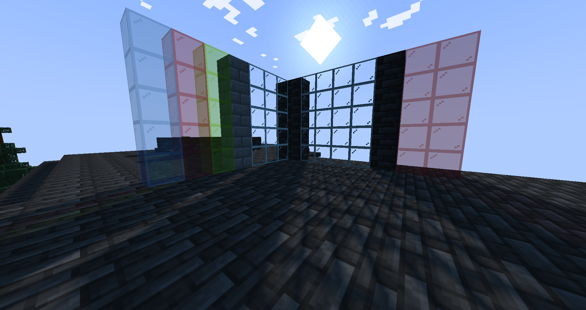 |
| Vanilla | With Shader |
|---|
In the "barebone" version of Minecraft, there are no such things as shadows. This can be seen in the top left image above labeled "Vanilla". We added shadows that come from the sun. Some blocks in Minecraft are transparent - such as glass. We made sure that sunlight is able to go through transparent blocks. Pay attention to the floor on the shader images, you can see that shadows are formed from the solid blocks, but light is passed through the glass blocks.
| 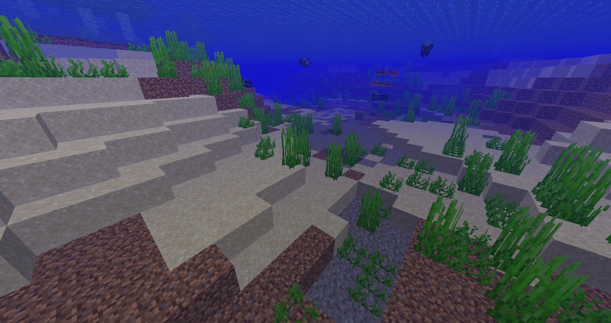 | 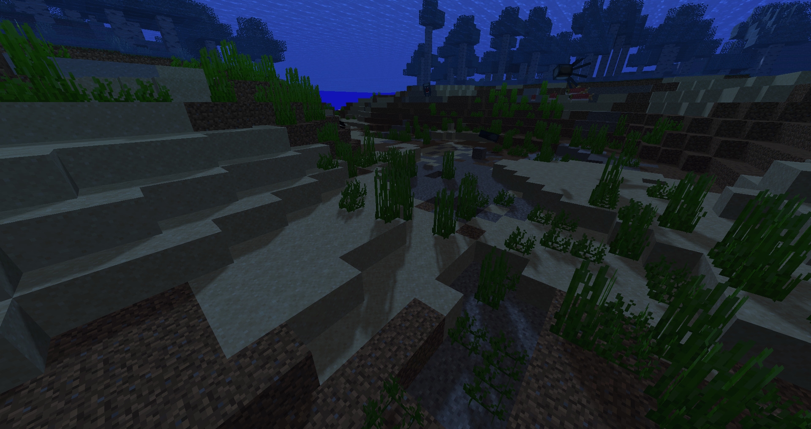 |
| Vanilla | With Shader |
|---|
We also incorporated shadows in water. When you are underneath the water surface you will see the shadows of sea plants and ledges - look closely and you can even see the shadow of the fish. As usual, the vanilla version of Minecraft doesn't support shadows seen in the vanilla images.
| 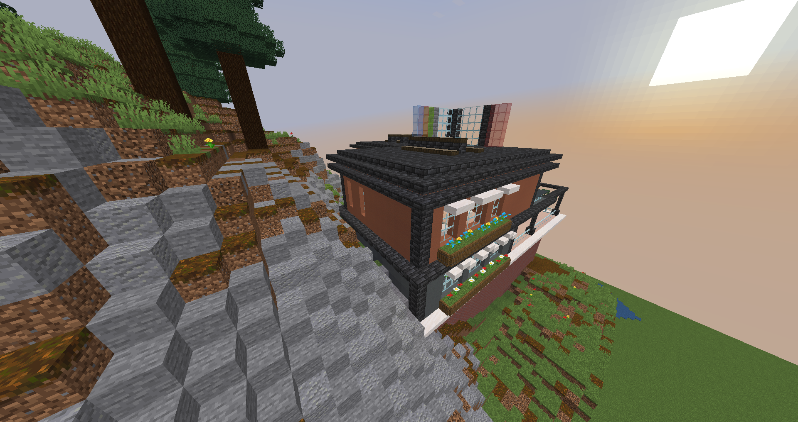 | 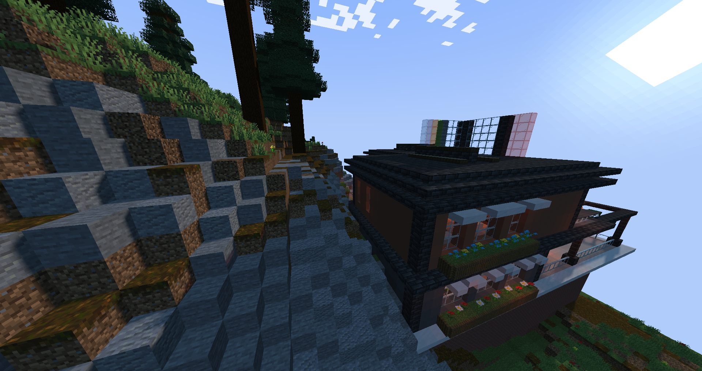 |
| Vanilla | With Shader |
|---|
With normal shading, blocks facing away from the sun are darker than blocks facing towards the sun. As seen, the back of the house is darker as it does not get direct sunlight as opposed to the blocks on the mountain. In the vanilla version, there is no normal lighting, therefore blocks get the same color.

|
|
| Vanilla | With Shader |
|---|
Blocks in minecraft can appear to be flat, therefore we added parallax mapping which adds depth to the blocks. Moreover, specular highlights adds a shin to objects that should be reflective.
In order to get started programming our own shaders in Minecraft, we reference the Developer Resource through ShaderLABS, a community where shaders
information about Minecraft is shared. Through this, we also followed a tutorial to get familiar with programming with OpenGL on Minecraft. This is also another extremely helpful tutorial for OpenGL and all kinds of lighting methods.
Minecraft renders its graphics in various pipelines. Here we decided to follow the Optifine Pipeline which describes the order in which the game is rendered in (ie, terrain, entities, sunlight, shadows).
Moreover, the document for Optifine can be found here.
Find some useful tutorials to share, help debugging with specular lighting and parallax mapping, write part of technical report.
Worked on debugging water shadow, result and references of final technical report, and milestone powerpoint slides